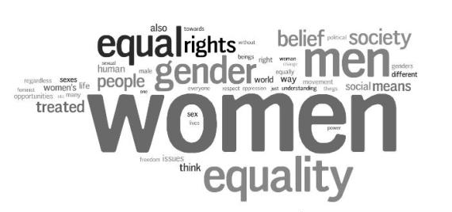

#1. What is gender equality?
— Gender equality is intrinsically linked to sustainable development and is vital to the realization of human rights for all.
The overall objective of gender equality is a society in which women and men enjoy the same opportunities, rights and obligations in all spheres of life.
#2. What are Women's Empowerment Principles?
— In brief, the principles are:
* Establish high-level corporate leadership for gender equality.
* Treat all women and men fairly at work—respect and support human rights and nondiscrimination.
* Ensure the health, safety and well-being of all women and men workers.
* Promote education, training and professional development for women.
* Implement enterprise development, supply chain and marketing practices that empower women.
* Promote equality through community initiatives and advocacy.
* Measure and publicly report on progress to achieve gender equality.

#3. What institutional and societal changes need to be made?
— We have learned a lot about improving economic access for women through shifting from a gender approach, where we are merely targeting women in our programs, to an empowerment approach, where women are included and made part of the process.
An integrated approach requires the analysis of structural changes that must occur in the rest of society. What rights do women lack? Where are the barriers that are locking them out of the economic system? This is where good advocacy work comes into play, by asking the question: What needs to change in society for women to be empowered?
Often, the necessary institutional changes are not what one would expect. For example, women in DRC can’t get a bank account because they need to show title to land, something that women are not allowed to possess in DRC. For this reason, the World Bank supported a program to develop a new family code to improve the business climate for women. The new code would no longer require the permission of a married woman’s husband in order for her to have financial access. To accomplish this, however, the project needed extensive support from government leaders and the larger community. Thus, they actively supported workshops for the Ministry of Women that were designed to advocate how the new family code economically benefits multiple actors like senators, private sector organizations, civil society and parliamentary duties.
#4. How should men be involved?
— Likewise, it’s not enough just to target and train women. In most societies where women are not economically valued, the problem has very little to do with women and much more to do with men, specifically how they view and treat women. To successfully empower women, it’s essential to have a household approach that educates both men and women on how to make household financial decisions, on the value of a woman in her community and society, and on the economic potential that women have for their households and communities. Thus, training, advocacy campaigns and other interventions should be geared toward both women and their families.
Moreover, if a women’s empowerment program doesn’t take men into account in situations of conflict or violence, the intervention can cause more harm than good and might even attract more violence to women.
#5. Can developing an alternative structure bring about change in society?
— R. Buckminster Fuller once said, “You never change things by fighting the existing reality. To change something, build a new model that makes the existing model obsolete.”
Often the most efficient way to change structures is through working directly with the government. But some governments and institutions will be resistant to change or slow to progress. While keeping protection in mind, creating alternative structures can enable more widespread public acceptance, even without government and societal buy in.